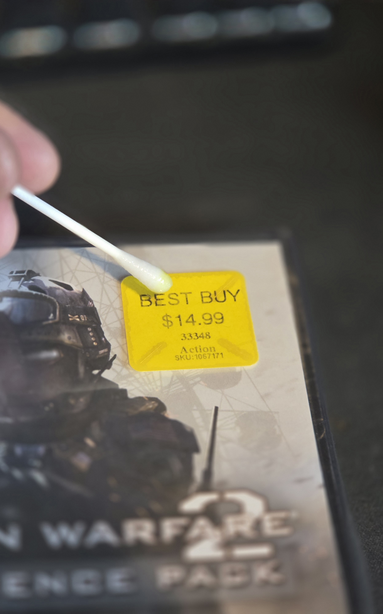
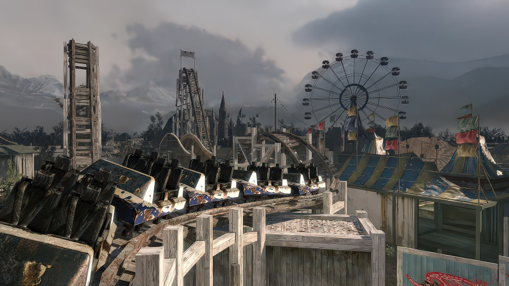
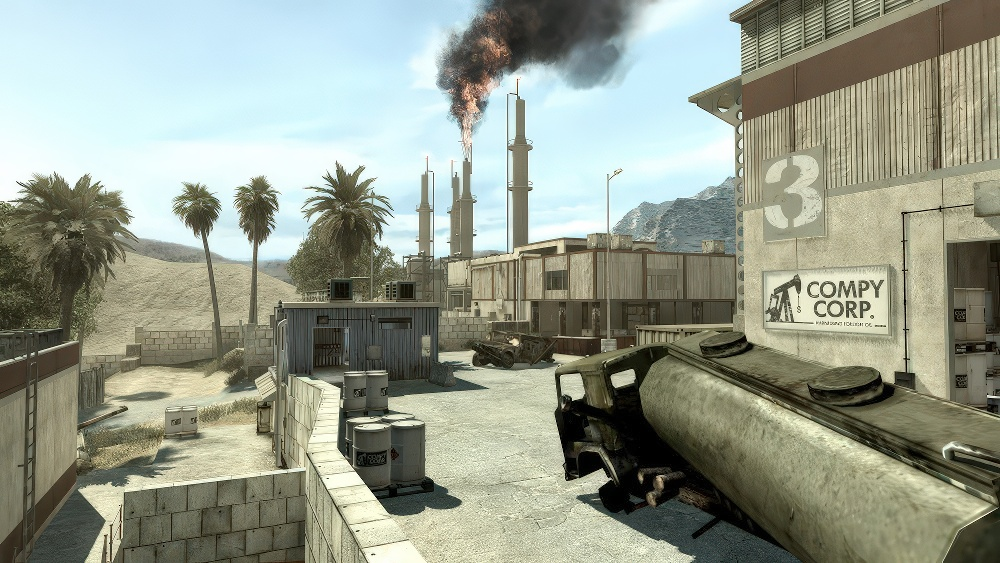
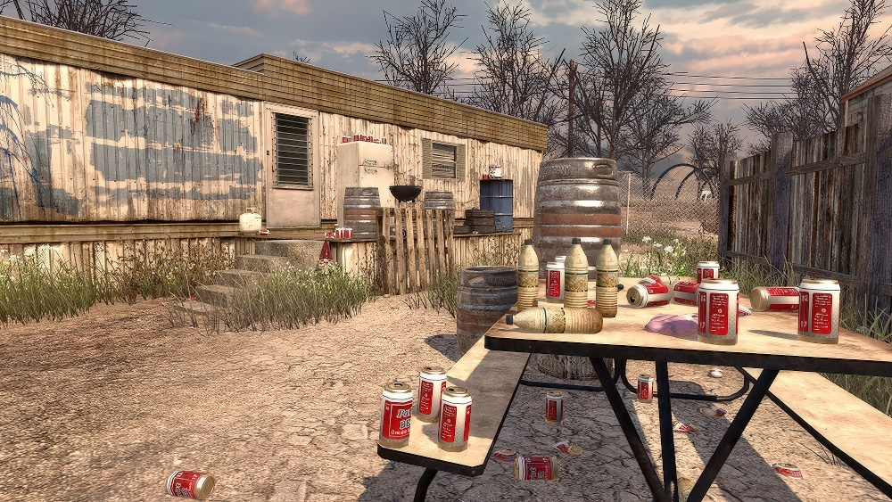
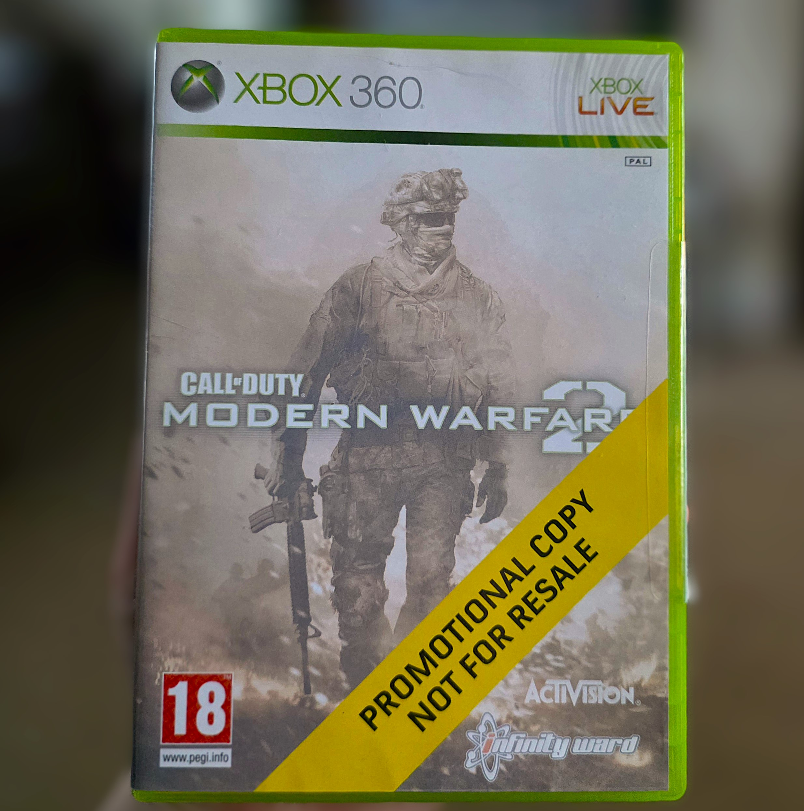
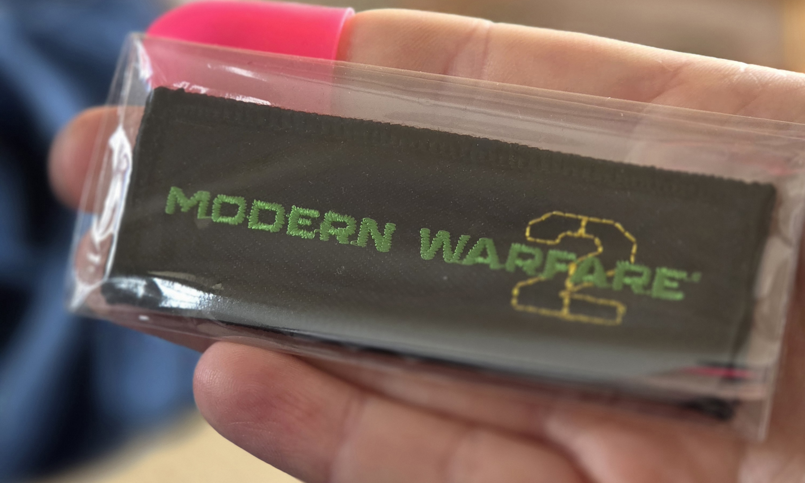

Welcome
This website showcases my collection of Call of Duty: Modern Warfare 2 items. While their rarity and monetary value may vary, each one holds significant sentimental value as a positive reminder of childhood nostalgia and an era of my personal and gaming history that I do not believe can ever be replicated.
I began this collection after rediscovering MW2 on PC, many years after my time playing it on the Xbox 360. I joined online communities dedicated to updating and securing the game, which had become unstable and unsafe over time. Getting it running safely again wasn't just about preservation; it allowed me to dive back in and brought a flood of memories with it.
Playing the game again triggered a profound realisation. It dawned on me just how subconsciously those original years of immersion had influenced my adult life. My decision to study International Relations, my travel choices that often mirrored the game's locations, and my enduring fascination with conflict—it wasn't until I returned to MW2 that I could finally see the subtle, underlying thread connecting all these seemingly independent passions back to my childhood.
While these dedicated modding communities have given the game a rebirth, its player base is inevitably dwindling from the million concurrent players it boasted in 2009. This collection, therefore, is my way of honouring the game and the memories it gave me. It serves as a personal archive for a not-too-distant future when the lobbies may be empty, but the game's legacy — and its impact on me — will remain.
Resurgence DLC
This is a sealed copy of the Resurgence downloadable content for Modern Warfare 2. This was the second of two DLC's released for the game, honouring Activision's claim to release at least two pieces of downloadable content at E3 2009. The Resurgence Pack was released on June 3, 2010 for Xbox 360, and July 6 for PlayStation 3 in North America and PC worldwide, and July 7 for PS3 in Europe.

At £27 delivered from america, this was surprisingly good value.
Although 15+ years old, I couldn't accept the Best Buy sticker. I had to find a way to remove it.

After asking around, I had heard lighter fluid was the best method of removal.
A cotton bud applying the fluid in light layers allowed the sticker to come off with ease in minutes.
The Resugence Pack expanded the Modern Warfare 2 online experience with five new multiplayer maps, with three brand new releases and two remastered fan-favourites from the original Modern Warfare - causing its release to be both fascinating and controversial.
The three new maps added completely fresh experiences:
- Carnival: A large, desolate theme park, offering a very unique experience. Its wide-open long-range design made it deadly due to the threat of snipers, while the claustrophobic, dilapidated, clown-filled funhouse and bumper car areas meant you could never let your guard down due to the high chance of close-quater combat at any time.
- Fuel: A massive oil refinery and rail yard in the Middle Eastern desert built for long-range warfare. When released, it ovetook Derail, Overgrown and Wasteland as the largest multiplayer map in the game, defined by its split between an external area full of long sightlines and a close quater urban area in its center.
- Trailer Park: The polar opposite of Fuel, this map was a tight, maze-like trailer park. Its extremely close quarters and chaotic layout made it a haven for fase-paced play. This map was very unique and one of my personal favourites, once a player learned possible spawns and tactics, killstreaks were almost guaranteed.

CARNIVAL

FUEL

TRAILER PARK
Alongside these new maps, the pack brought back two well-known maps from Call of Duty 4: Modern Warfare, remastered with MW2's updated graphics and mechanics:
- Strike: An urban environment set in a desert town, balanced for a mix of domination and team deathmatch.
- Vacant: An abandoned Russian office complex that became well known for its incredibly tight angles and across-map sniping positions.
Promotional Copy of Modern Warfare 2

This is a promotional copy of Modern Warfare 2
I know nothing about it. It came from Australia and was sold by a very nice man.
A paragraph below the image of the promo copy. The disk is white, I need to put a picture of it on here. I really need to find out what promotion this was a part of... Maybe I'll message the eBay seller and see if he has any idea.
Modern Warfare 2 Hardened Edition
This was one of the later items I have added to my collection as it was an oddly difficult one to find. I had seen a lot of copies for sale that weren't sealed, and the ones that were looked particularly suspicious due to a torn or loose seal. I'd seen this copy available on a website for a game shop in Doncaster, over a hundred miles away. It was surprisingly cheap, but the reviews for the shop were all excellent

A sealed copy of the limited Hardened Edition was one of the hardest things i've had to source.
Thankfully this was found in near-perfect condition for a very reasonable price.
The "Hardened Edition" was the premium, mid-tier collector's version of Modern Warfare 2, sitting just below the "Prestige Edition" that came with night-vision goggles or a statue of Soap McTavish. The Hardened edition offered a collectable version of the game at a price-point that was far more accessible for the average consumer.
Its contents were a significant upgrade from the standard release, all contained in a unique metal case:
- A copy of Modern Warfare 2 on a PS3.
- Collectible SteelBook: The game came in a metal steelbook case, which are often collected items in themselves.
- "Behind the Lines" Art Book: A hardcover book filled with development art, sketches, and behind-the-scenes renders.
- Call of Duty Classic Download: This version included a voucher code to download a full, remastered version of the original Call of Duty. At the time, this was the only way to get CoD Classic on the console.
Modern Warfare 2 Patch

You aren't gonna believe it... but this is a patch
It is in my hand. Look at it. It's also in some plas tick.
This is some text. There is a patch in my hand. The patch is designed to look like Modern Warfare 2. What a coincidence! It's also sealed! Yahoo!
The End
In retaliation for the airport massacre, Russia launches a surprise invasion of the U.S. East Coast, facilitated by their earlier capture of the ACS module, which allowed them to disable NORAD's satellite network. Foley's squad, including Allen's replacement Private James Ramirez, alongside other Army Rangers, defends Northern Virginia before holding out against Russian forces in Washington, D.C. Under interrogation, Rojas reveals that Makarov's most hated enemy is an individual known as "Prisoner 627", imprisoned in a gulag in Kamchatka Krai. With the United States unable to send assistance due to the war, Task Force 141 is forced to escape Rio de Janeiro with aid from Soap's old contact, Nikolai. Task Force 141 then links up with U.S. Navy SEALs to rescue hostages and neutralize S.A.M. sites aboard oilrigs, before breaking into the gulag and rescuing the prisoner, who is revealed to be Soap's former commanding officer Captain John Price.
2025 - cfod.co.uk
Call of Duty: Modern Warfare 2 © 2009 Activision Publishing, Inc. All trademarks and copyrights are the property of their respective owners.